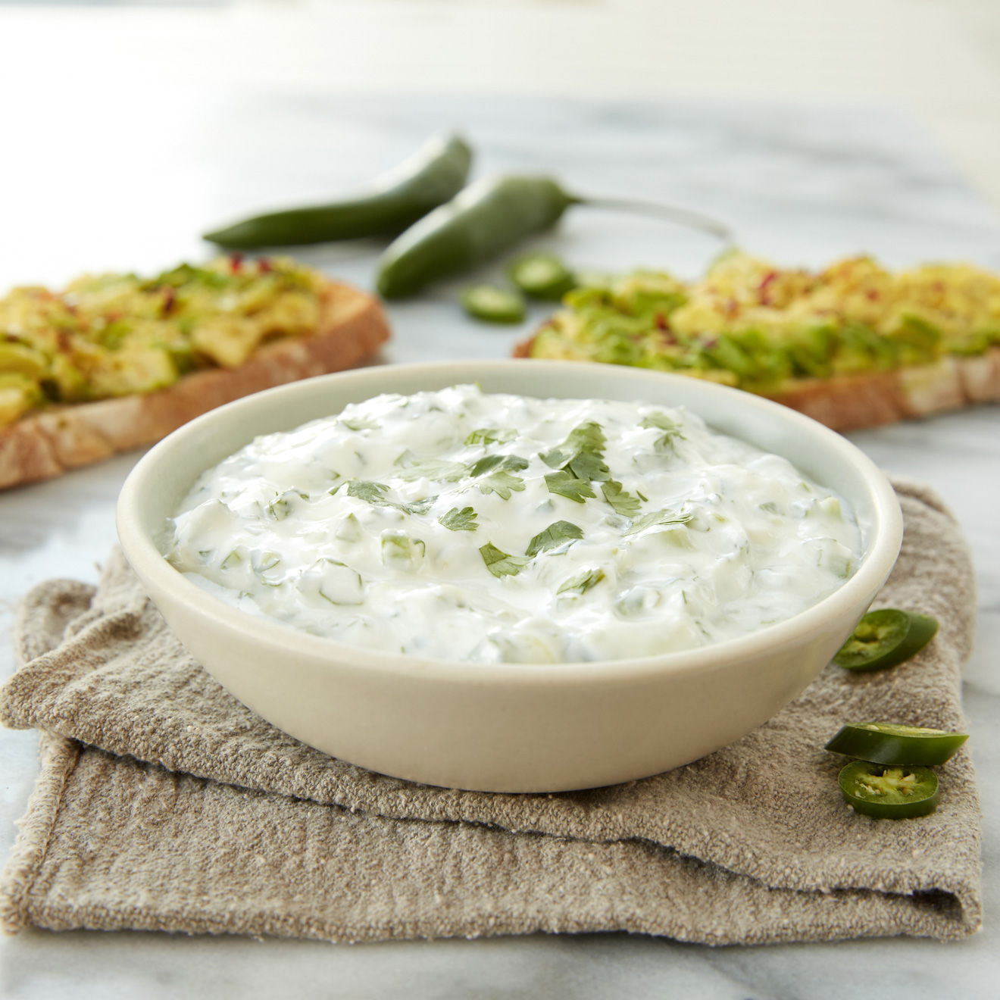

Garlic Yogurt Sauce

Description
This is THE sauce I go for 99.9% of the time when I'm enjoying some air fried potatoes. This sauce is strong thanks to the garlic yet the yogurt keeps the taste fresh!
Ingredients
- A bowl of yogurt.
- 2-4 cloves of sliced garlic
- 1 chopped parsley
Steps
- Put the yogurt, parsley and garlic into a bowl.
- Mix
- That's it, enjoy!